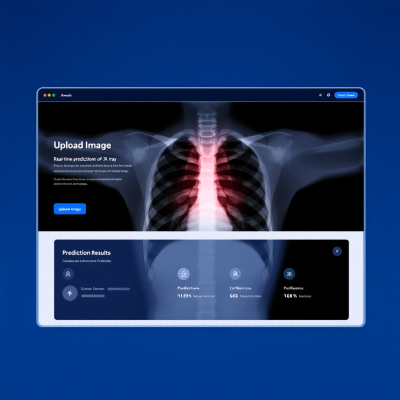

Highlight Penelitian

Model CNN mencapai akurasi validasi hingga 96% dalam klasifikasi X-ray paru-paru sebagai "Normal" atau "Pneumonia".
✅


Dikembangkan dengan Streamlit, aplikasi memungkinkan prediksi real-time hanya dengan mengunggah citra X-ray.
✅

Evaluasi dengan grafik akurasi dan loss menunjukkan performa model stabil dan minim overfitting.
✅

Rencana pengembangan mencakup integrasi Grad-CAM dan transfer learning (ResNet/EfficientNet) untuk akurasi dan interpretabilitas yang lebih baik.
✅